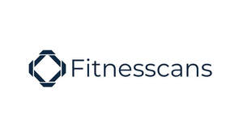

Trade Mark Journal No.2026/008 20 February 2026
UK00004334147 2 February 2026 (9,41,42,44)

- Class 9
- Mobile application software; Downloadable software applications for mobile phones; Downloadable mobile applications; Downloadable mobile applications for the management of data; Computer programs and software for image processing used for mobile phones; Artificial intelligence software; Artificial intelligence software for analysis; Artificial intelligence and machine learning software; Interactive software based on artificial intelligence; Computer software; Downloadable computer software; Downloadable computer software applications; Computer software applications, downloadable; Computer software platforms; Machine learning software for analysis.
- Class 41
- Physical fitness assessment services for training purposes; Exercise [fitness] advisory services; Physical fitness consultation; Provision of educational services relating to fitness; Provision of educational services relating to exercise; Health and fitness training; Provision of instruction relating to nutrition; Provision of educational services relating to diet; Provision of educational health and fitness information.
- Class 42
- Computer analysis; Design of computer machine and computer software for commercial analysis and reporting; Programming of computer software for evaluation and calculation of data; Computer systems analysis; Computer analysis services; Computer services for the analysis of data; Design and development of computer software; Development of computer software application solutions; Design, development and programming of computer software; Research in the field of computer programs and software; Technical consultancy relating to the application and use of computer software; Measurement evaluation services; Measurement services; Software as a service; Platform as a Service [PaaS]; Cloud computing services.
- Class 44
- Fitness testing; Health assessment services; Health screening services; Physical examination services; Medical testing services, namely, fitness evaluation.
James Thomas Barlow